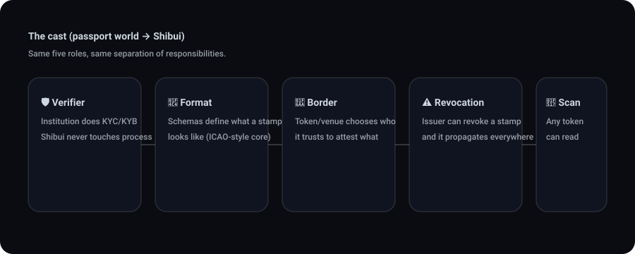
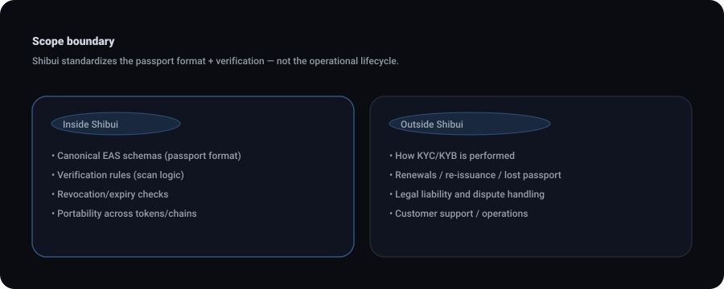
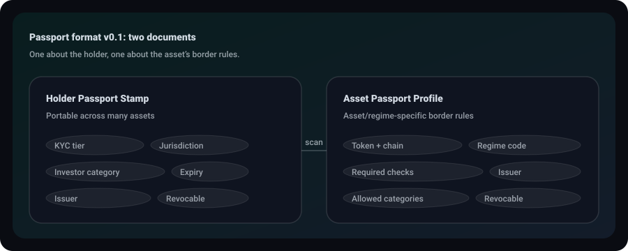
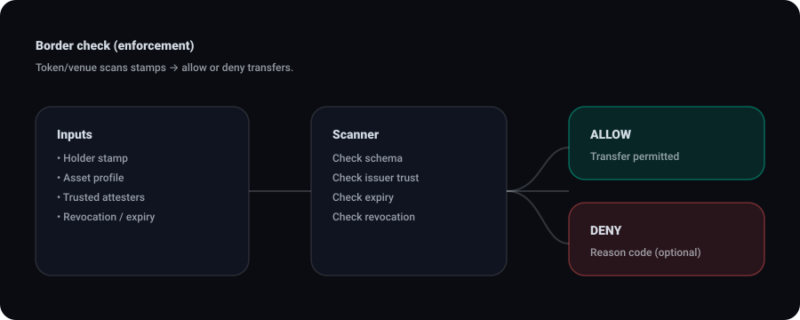

The Passport System for Tokenized Assets
Five roles make global passports work. The same five make Shibui work.
Read full story

"The Passport System for Tokenized Assets"
The cast. Five roles make the global passport system work. The same five roles make Shibui work. Every one maps directly.

Act 1: The Sovereign Authority — who verifies
In the passport world, the US State Department verifies American citizens. France's Ministère de l'Intérieur verifies French citizens. Each country runs its own process — background checks, biometrics, document review. No country dictates another's process.
GLEIF works the same way for legal entities. GLEIF doesn't verify companies directly. It accredits Local Operating Units — Deutsche Börse, Bloomberg, SWIFT — who each issue LEIs under GLEIF's quality framework.
In Shibui, the sovereign authority is any institution that performs compliance work. DTCC runs KYC on its participants. Fidelity verifies accredited investors. A Frankfurt bank classifies clients under MiFID II. Each institution runs its own process, uses its own tools — Refinitiv for AML screening, Jumio for document verification, internal compliance engines. Shibui never touches the verification. The institution publishes a conclusion, not the underlying data. "This investor is KYC-verified, accredited, US-based, valid until January 2027." Not the passport photos, not the bank statements, not the tax returns — just the stamped result.

The institution's on-chain wallet address becomes a trusted attester. That's the digital equivalent of being an accredited passport-issuing authority.
Act 2: The Document Format — what gets stamped
Every passport in the world follows ICAO Doc 9303. Same field layout. Same machine-readable zone. Same biometric data structure. That's why a scanner in Narita reads a passport printed in Brasilia. The countries didn't agree on a printer. They agreed on a format.
Shibui has three document formats — three EAS schemas, each with a defined purpose:

These schemas are to Shibui what ICAO 9303 is to passports. The data standard that makes every scanner — every token on every chain — able to read every stamp.
Now, where do existing standards like ISO 20022 and GLEIF's LEI system fit? They don't compete. They feed in. ISO 20022 is the messaging standard banks use internally to communicate compliance decisions between systems. GLEIF's vLEI is the digital credential for legal entities. These are the internal wires — how institutions talk to each other and manage identity off-chain. Shibui is where those conclusions get published as verifiable on-chain proof. ISO 20022 is the internal dispatch. The EAS attestation is the public stamp in the passport.
Act 3: The Border Control — who accepts whose passport
Japan doesn't accept every country's passport equally. Visa-waiver agreements, bilateral treaties, risk tiers. Each country decides which passports it honors and for which purposes — tourism yes, work no. This is sovereignty at the acceptance layer.
In Shibui, the token issuer is the country at the border. They control trust through one function: addTrustedAttester(address, topics[]). A tokenized US Treasury fund on Base might configure it like this: trust Fidelity for KYC and accreditation, trust DTCC for KYC only, trust a European bank for MiFID II professional classification. Trust is granular per compliance topic, not all-or-nothing — exactly like how a visa waiver covers tourism but not employment.

The governance behind that call mirrors correspondent banking, the process institutions already run. Board approves the counterparty relationship — off-chain business decision. Legal signs an agreement — off-chain contract. Compliance evaluates the counterparty's AML program — off-chain due diligence. Then operations executes one on-chain transaction. No new process. Same institutional governance, new execution layer.
Schema governance — who gets to define what a valid passport format looks like — sits with the EEA working group. Core schemas (Investor Eligibility, Issuer Authorization, Wallet-Identity Link) follow a 90-day standardization track. Extension schemas for jurisdiction-specific needs (AML, sanctions, source of funds) follow a lighter community track. Individual issuers can create private schemas for internal requirements. Same tiered governance as ICAO: the core spec is slow and deliberate, extensions are faster, private supplements are sovereign.
Act 4: Interpol — who enforces across borders
Here's where the passport analogy gets most powerful. When Interpol issues a red notice, it propagates to every member country's border system. Not manually. Not airport by airport. One alert, global enforcement.
Today, tokenized assets have no Interpol. If an investor fails an AML check, someone has to notify each token issuer separately. Each issuer has to act independently. There's no shared enforcement layer.
Shibui creates it. Two mechanisms, two scopes:
Individual revocation — the red notice. An investor fails ongoing AML screening. The compliance officer at the attesting institution calls EAS.revoke(attestationUID). One transaction. EAS records a revocationTime on the attestation. The next time any token calls isVerified() on that investor, the EASClaimVerifier sees the revocation and returns false. The investor is blocked from buying, selling, or receiving every token that relied on that attestation. Across Base, Arbitrum, Optimism, mainnet. Across every token from every issuer who trusted that attester. Immediate. Automated. No manual propagation.
Because the investor's wallets are linked through the Wallet-Identity Link schema, revoking the attestation against the identity blocks the trading wallet, the custody wallet, and the settlement wallet simultaneously. You cancel the passport, not individual boarding passes.
Institutional revocation — sanctions on an entire country's passport authority. A KYC provider is compromised, loses its license, or is found issuing attestations without proper verification. The token issuer calls removeTrustedAttester(address). One transaction. Every attestation from that provider becomes invalid for that token — instantly. Every investor verified only by that provider is blocked until re-verified by another trusted attester. This is the equivalent of a country revoking recognition of another country's passport office.
Who governs this? The attesting institution governs individual revocations — they own the compliance relationship with the investor. The token issuer governs institutional trust — they decide which attesters to accept or remove. The EEA working group governs the schema standards and dispute resolution. Three tiers, same as the real system: Interpol acts on individuals, countries act on bilateral trust, ICAO governs the format.
Act 5: The Scanner Network — what reads it all
ICAO didn't ask every airport to build its own scanner technology. It defined the machine-readable zone format, and manufacturers built scanners to that spec. The infrastructure became universal because the standard was open.
EAS is the scanner network. Already deployed on Ethereum mainnet, Base, Arbitrum, Optimism — 15+ chains. The Schema Registry contract lives at 0x4200000000000000000000000000000000000020 on Base and Optimism, at 0xA7b39296258348C78294F95B872b282326A97BDF on mainnet. Same interface everywhere. When a token calls isVerified(), the EASClaimVerifier queries these contracts — fetches the attestation, checks the schema matches, confirms the attester is trusted, verifies not revoked, verifies not expired. Five checks, one call, ~28,000 gas for a single topic.
Shibui didn't build a new scanner. It built the adapter — the EASClaimVerifier — that teaches ERC-3643 security tokens how to read attestations from scanners already installed in every airport. Publishing an attestation costs ~$0.07 on an L2. The institution absorbs that as infrastructure cost, same way an airline doesn't charge passengers for the scanner at the gate.
The full system, one frame:
GLEIF accredits identity authorities — the sovereign layer. ISO 3166-1 and EAS schemas define the document format — the standard layer. Correspondent banking governs bilateral trust — the acceptance layer. The attesting institution and the token issuer govern revocation — the enforcement layer. EAS provides the on-chain infrastructure already live on 15+ chains — the reader network.
Shibui is the system architecture that connects them. Five roles, five layers, each with clear governance, all already operating independently. The missing piece was the wiring.
One passport. Every airport. Every airline. Every country still sovereign.